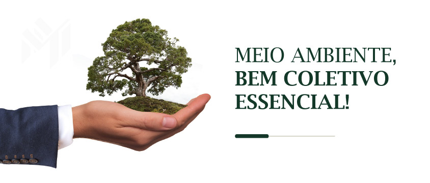

Os recursos do planeta se esgotam; por isso a necessidade premente de ter um modelo ecologico e saudavel que garanta o futuro das novas gerações. Ter um estilo de vida sustentavel e muito mais do que consumir de forma responsavel, também consiste em estar comprometido com o meio ambiente, o que se consegue colocando em pratica pequenas ações em nosso dia a dia.
Segundo fontes de pesquisas realizadas, o nosso planeta que é o nosso lar aos poucos está se exaurindo. Os nossos recursos a cada ano deixam de ser completos e disponíveis. E se tornam escassos e pouco acessíveis como em tempos atrás. Segundo BRUMATTI (2021), o dia de sobrecarga apresenta ser um pico diante ao desmatamento da Amazônia. Esta informação se apropria de relatórios como o da Global Footprint Network (GFN 2020) “ De acordo com o relatório da GFN, só no Brasil, 1,1 milhão de hectares foram perdidos em 2020 e estimativas para 2021 indicam que possa ocorrer um aumento de até 43% no desmatamento com relação ao ano anterior. ”
Em contrapartida IBERDROLA (2022), afirma em sua publicação a necessidade de adotar um molde defensável e suportável que venha ser o planejamento futuro a novas gerações que venham a habitar nosso planeta. Atendendo a esta possível exigência relata-se na integra o item desta publicação:
“Os recursos do planeta se esgotam; por isso a necessidade premente de ter um modelo ecológico e saudável que garanta o futuro das novas gerações. Ter um estilo de vida sustentável é muito mais do que consumir de forma responsável, também consiste em estar comprometido com o meio ambiente, o que se consegue colocando em prática pequenas ações em nosso dia a dia.”
Diante a realidade e continuando a apreciar este modelo, vamos acompanhar alguns dados apresentados por IBERDROLA (2022) que nos remete a compreender esta carência a nível de aplicar a sustentabilidade em ações da humanidade:
“ Segundo a Organização das Nações Unidas (ONU), a população mundial atinge atualmente a marca de 7,7 bilhões e continua crescendo. Cada um de nós se alimenta, se desloca e consome bens e serviços, mas muitos agem de forma irresponsável em relação ao meio ambiente. Portanto, cabe perguntar: a ação sustentável de poucos indivíduos serve para alguma coisa? Para a maioria das organizações internacionais que tenta preservar o planeta a resposta é sim: "Cada gesto conta", é o que afirma o Greenpeace.
De fato, um estudo da Universidade de Michigan nos Estados Unidos indica que as regras estabelecidas por um grupo populacional garantem a eficiência de uma estratégia de vida sustentável. O segredo? A reputação de cada um serve de reforço positivo para os demais, ou seja, se um vizinho reciclar corretamente será uma inspiração para os outros moradores. Para os pesquisadores, incentivar essas pequenas ações é tão fácil quanto seguir algumas dicas e fazer pedagogia ambiental. ”
Todo apontamento para ser completo é interessante apresentar uma solução. E a resposta vem de uma pergunta como seria um estilo de vida sustentável? Quais práticas precisamos adotar para isso? Qual seria o caminho mais acessível a ser traçado e cumprido para obter um êxito mais assertivo e assim continuar um estilo ou modelo que atenda a sustentabilidade e a continuidade dos seres humanos em harmonia com nosso planeta. Pautando na publicação de IBERDROLA (2022), demostra este caminho a ser trilhado, por uma receita praticada na história e parâmetros analisados ao longo do período em que a humanidade caminha:
Pautando na publicação de IBERDROLA (2022), demostra este caminho a ser trilhado, por uma receita praticada na história e parâmetros analisados ao longo do período em que a humanidade caminha:
Em 1986 a Organização Mundial da Saúde (OMS) definiu o conceito de estilo de vida como “uma forma geral de vida baseada na interação entre as condições de vida em um sentido amplo e os padrões individuais de conduta determinados por fatores socioculturais e características pessoais”. Um ano mais tarde, o Relatório Brundtland, realizado pela Comissão Mundial sobre Meio Ambiente e Desenvolvimento, começou a alinhar estilo de vida e sustentabilidade: "O desenvolvimento sustentável é aquele que satisfaz as necessidades presentes, sem comprometer a capacidade das gerações futuras de suprir suas próprias necessidades."
De lá para cá, o impacto negativo de nosso modo de vida sobre o meio ambiente não parou de crescer. A sobre-exploração dos recursos naturais, a poluição da água, a contaminação do solo e o desmatamento, a perda de biodiversidade, entre outros fatores, agravaram os problemas ambientais que devem ser resolvidos ao longo deste século. ”
Em observância a este foco ao caminho trilhado, vamos acompanhar fatores que influenciam o caráter, a maneira, a feição, a índole, o jeito e a atitude de forma de vida fundamentável a composição de respeito ao meio ambiente. De maneira individual, coletiva, interna e externa, são os primeiros pontos a serem observados. De acordo com MARCONDES E MARCONDES, estes pontos são resumidos da seguinte forma:
“No que se refere ao meio ambiente o desejável é que haja equilíbrio, buscando a conciliação entre os direitos do homem e seus deveres para com os seus semelhantes, devendo sempre prevalecer o interesse da coletividade, pois o direito de um não pode prejudicar o direito do outro, respeitando os limites da normalidade e integridade. ”
Por meio desta imagem MARCONDES e MARCONDES, simplificam a atenção deste assunto quando o caráter for, individual, coletivo ou por grupos sociais e também quando as condições forem externas ou internas ao assunto específico meio ambiente bem coletivo.
www.iberdrola.com/sustentabilidade/estilo-de-vida-sustentavel
www.g1.globo.com/sp/campinas-regiao/terra-da-gente/noticia/2021/07/28/entrando-no-vermelho-planeta-esta-prestes-a-esgotar-os-recursos-naturais-que-tinha-para-2021.ghtml
www.marcondesadv.com.br/artigos/meio-ambiente-um-bem-coletivo-essencial/
www.grupodpaschoal.com.br/sustentabilidade/(foto do site)